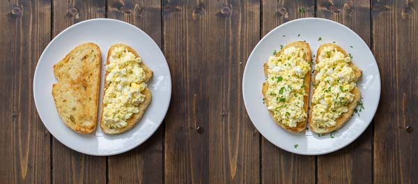

Eggs on toast

Feta cheese is the secret ingredient that takes scrambled eggs from good to great!
With this recipe, worry not about untasty eggs on your toast.
Ingredients
- Bread
- Butter
- Eggs
- Feta cheese
- Fresh dill or parley to garnish
Steps
- Spread thin layer of butter on both sides of the bread.
- Fry bread over medium heat for about 2 minutes on each side.
- Remove bread and set aside.
- Add 1/2 tbsp of butter to pan.
- Add eggs and feta cheese to pan and cook, stirring often, for about 3-4 minuites.
- Divide eggs on the bread slices and sprinke them with freshly chopped dill or parsley.
- Enjoy!